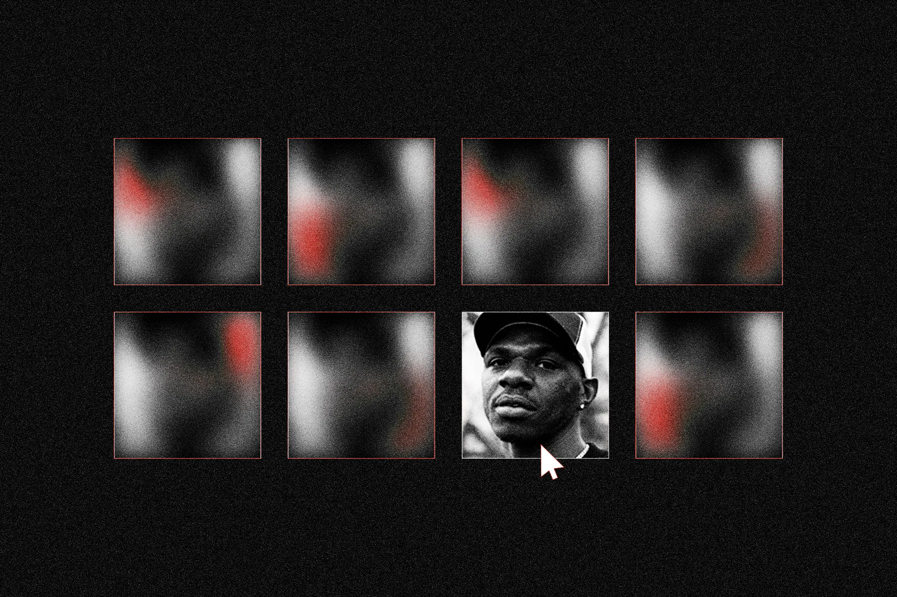

A knock on the door
“It blew me away because I wasn’t expecting it to be the police,” Christopher Gatlin said of the August 2021 knock on his door (KTLA, 2025). A computer had matched his face to a blurry photo of a man who attacked a security guard on a St. Louis train platform, though he had no apparent ties to the crime scene (MacMillan et al., 2025). After a lineup that the lead detective later admitted he steered, Gatlin could not pay a $75,000 bond and spent about 17 months in jail before the charges were dropped (MacMillan et al., 2025; Biometric Update, 2026).

The policy said a match “should not be used as the sole basis for any decision” (MacMillan et al., 2025), but a written warning can’t stop a weak match from becoming an arrest: what protects people is a clear procedure for what happens after the match.
Gatlin is not alone
Documented wrongful-arrest cases reported in selected sources, not a complete national count.
-
Nijeer Parks · Woodbridge, N.J. · 2019
- What happened
- Matched to a shoplifting suspect; he was 30 miles away.
- Consequence
- 10 days in jail; case dismissed.
-
Robert Williams · Detroit · 2020
- What happened
- Matched from poor-quality store video; a witness who saw only the video picked him.
- Consequence
- Arrested in front of his young children.
-
Christopher Gatlin · St. Louis · 2021
- What happened
- Matched from a blurry transit camera still.
- Consequence
- About 17 months in jail; charges dropped.
-
Randal Reid · Georgia, on a Louisiana warrant · 2022
- What happened
- Arrest warrant based on a match; the warrant did not mention facial recognition.
- Consequence
- About 6 days in jail.
-
Porcha Woodruff · Detroit · 2023
- What happened
- Matched from gas station video while 8 months pregnant.
- Consequence
- 10 hours in jail; charges dropped.
These are only the cases that became public. No database tracks wrongful arrests and their causes (Bergold & Kovera, 2025, p. S230). But they span five years and several cities, and most involved Black men and women (Bergold & Kovera, 2025, p. S231). The pattern repeats: a match treated as proof instead of a lead.
How a “match” is actually made
Facial recognition doesn’t tell police who someone is; it tells them who looks similar. By early 2025, at least eight Americans had been wrongfully arrested after facial recognition matches (MacMillan et al., 2025).
- 1Surveillance image
- 2Blurry conditions
- 3Database search
- 4Ranked look-alikes
- 5Human decision
Check independent evidence
Arrest
It starts with a camera image of someone police can’t name.
The software works by comparing the details of one face with the details of other faces. When the camera image is blurry, dark, taken from an angle, or shows only part of the face, many of those details are missing, so the match becomes a guess (Bergold & Kovera, 2025).
The software compares the photo with stored faces, often mug shots (Biometric Update, 2026).
It returns a ranked list of look-alikes, often with a confidence score beside each face (Bergold & Kovera, 2025).
An officer decides what the match means. The intended path checks independent evidence first; in Gatlin’s case, the match was treated as proof (MacMillan et al., 2025).
Try it yourself: Who would you investigate?
Here is the blurry image and the three faces the software returned. Which one would you look into first?
What to do: compare the camera still with each face, read its match score and arrest record, then tap the one you would investigate. Why: officers make this same choice after a search. In a 2025 experiment, researchers gave people this task to see what swayed them: the face, the score, or the record (Stewart & Kukucka, 2025). See if you do the same.
Faces A, B, and C are AI-generated images, not real people. Scores and records are made up.Images: AI-generated
None of them.
The real person was never on the list, and all three are innocent. In a 2025 experiment, when one innocent face came with a prior conviction, 51% of people chose it; match scores did not change their picks, but the record did (Stewart & Kukucka, 2025).
Fix it: try again, the way researchers recommend
Researchers recommend hiding confidence scores and criminal records, so reviewers compare faces only (Stewart & Kukucka, 2025).
Same three faces, shuffled. Which looks most like the probe image?
This time, you judged the faces only as faces. Your pick still isn’t “right,” because the real person was never on the list.
Is your face in a police database?
≈ half
of American adults had a photo in a police face database in 2016.
Photos police can search
- Mug shotsPhotos taken when someone is arrested.
- Driver’s licensesIn some states, police can search the license photos of ordinary drivers.
- PassportsSome searches include passport photos, even of people never convicted of a crime.
These searches are common. New York police made more than 2,800 arrests from them between 2011 and 2018 (Garvie, 2022, as cited in Bergold & Kovera, 2025).
Only one person committed the crime. So every face added to a database adds more people who look like the suspect but did nothing wrong. Even a search of 30,000 faces is weak evidence of guilt (Bergold & Kovera, 2025, p. S228). Gatlin’s search covered more than 250,000 mug shots (Biometric Update, 2026).
- Look-alike: innocent of this crime, even if arrested before
- Everyone else
- Each icon = 1,000 faces
A wrong match can then lead to a lineup, where a witness may pick the closest look-alike. Current practices “increase the likelihood that innocent suspects will be placed in lineups” (Kovera, 2024, p. 125).
Counting crime, not wrongful arrests
Facial recognition does show benefits. But look at what the studies count: crime rates, lab accuracy, and opinions. None of them counts how many innocent people were arrested after a wrong match.
-
Less violent crime
Across 268 U.S. cities, police use was linked to less serious violent crime and homicide, without raising racial disparities in arrests for violent offenses.
Counted: city crime rates
(Johnson et al., 2024) -
Accurate with experts
In a national lab study, one trained examiner plus an algorithm was more accurate than two examiners working together.
Counted: accuracy in a lab, not real arrests
(Phillips et al., 2018) -
Police and public see value
Officers expect these tools to improve public safety, and many Americans see benefits too.
Counted: opinions and surveys
(Dempsey et al., 2023; Mesch & Lam, 2025)
But: none of these studies counted the mistakes, whether each arrest caught the right person.
Why the rule fails, and what would fix it
The rule puts all the weight on one human check, and that check is untrained, swayed by extra details, unequal, and unstudied.
-
Officers aren’t trained like lab experts
Lab examiners were trained, saw no criminal records, and had no case to close (Phillips et al., 2018). Officers say they often lack training (Dempsey et al., 2023).
Fix: Train officers on these tools (Dempsey et al., 2023).
-
Extra details sway the choice
Each face comes with a score, criminal history, and address. In a 2025 experiment, 51% picked the innocent face with a record (Bergold & Kovera, 2025; Stewart & Kukucka, 2025).
Fix: Hide scores and criminal records (Stewart & Kukucka, 2025).
-
The rule says what not to do, not how
Human review rules can “provide a false sense of security” (Green, 2022, p. 1). Gatlin’s policy gave no steps for checking a match.
Fix: Use a blind second reviewer, and require other evidence before a lineup (Stewart & Kukucka, 2025; Kovera, 2024).
-
The risk isn’t equal
- Less accurate for people of color
- More people of color in the databases
- Bigger databases hurt Black faces more
- Race is always visible to reviewers
(Bergold & Kovera, 2025, pp. S227–S229)
Linked to greater racial disparity in arrests (Johnson et al., 2022), though a later study found no rise for violent offenses (Johnson et al., 2024).
Fix: Hide records and require independent evidence, so bias has fewer places to enter.
-
No one has watched what happens next
Of eleven real-world studies, none observed what officers do after a match (Stiernströmer, 2026). We know the rule, but not how it is used.
Fix: Let cities approve and test the tools first (Green, 2022; Stiernströmer, 2026).
None of these fixes bans the technology. They turn a warning into a procedure.
The bottom line
The software said maybe. The process said guilty.
What happens after the match?
References
- ABC7 News. (2020, December 30). Black man in New Jersey sues after false facial recognition lands him in jail. https://abc7news.com/criminal-facial-recognition-racial-bias-in-technology-man-falsely-arrested-nijeer-parks/9197215/
- Bergold, A. N., & Kovera, M. B. (2025). The contribution of facial recognition technology to wrongful arrests and trauma. Psychological Trauma, 17(S1), S225–S233. https://doi.org/10.1037/tra0001783
- Biometric Update. (2026, August). Amazon Rekognition faces scrutiny in false arrest lawsuit. https://www.biometricupdate.com/202608/amazon-rekognition-faces-scrutiny-in-false-arrest-case
- Dempsey, R. P., Brunet, J. R., & Dubljević, V. (2023). Exploring and understanding law enforcement’s relationship with technology. Applied Sciences, 13(6), 3887. https://doi.org/10.3390/app13063887
- Green, B. (2022). The flaws of policies requiring human oversight of government algorithms. Computer Law & Security Review, 45, 105681. https://doi.org/10.1016/j.clsr.2022.105681
- Johnson, T. L., Johnson, N. N., McCurdy, D., & Olajide, M. S. (2022). Facial recognition systems in policing and racial disparities in arrests. Government Information Quarterly, 39(4), 101753. https://doi.org/10.1016/j.giq.2022.101753
- Johnson, T. L., Johnson, N. N., Topalli, V., McCurdy, D., & Wallace, A. (2024). Police facial recognition applications and violent crime control in U.S. cities. Cities, 155, 105472. https://doi.org/10.1016/j.cities.2024.105472
- KTLA / Nexstar KTVI. (2025, February 5). Man jailed over police AI program, then freed 17 months after victim raised doubts. https://ktla.com/news/man-jailed-over-police-ai-program-then-freed-17-months-after-victim-raised-doubts/
- Kovera, M. B. (2024). The role of suspect development practices in eyewitness identification accuracy and racial disparities in wrongful conviction. Social Issues and Policy Review, 18(1), 125–147. https://doi.org/10.1111/sipr.12102
- MacMillan, D., Ovalle, D., & Schaffer, A. (2025, January 13). Arrested by AI: Police ignore standards after facial recognition matches. The Washington Post. https://www.washingtonpost.com/business/interactive/2025/police-artificial-intelligence-facial-recognition/
- Mesch, G., & Lam, I. (2025). Public perceptions about the police’s use of facial recognition technologies. AI & Society, 40(5).
- Phillips, P. J., et al. (2018). Face recognition accuracy of forensic examiners, superrecognizers, and face recognition algorithms. PNAS, 115(24), 6171–6176. https://doi.org/10.1073/pnas.1721355115
- Stewart, C. K., & Kukucka, J. (2025). Cognitive bias affects perception and decision-making in simulated facial recognition searches. Behavioral Sciences, 15(8), 1094. https://doi.org/10.3390/bs15081094
- Stiernströmer, E. (2026). Facial recognition technology in law enforcement: A scoping review of existing empirical studies. Police Practice and Research. https://doi.org/10.1080/15614263.2026.2627208
- Thanawala, S. (2023, September 25). Facial recognition technology jailed a man for days. His lawsuit joins others from Black plaintiffs. Associated Press. https://www.news4jax.com/news/2023/09/25/facial-recognition-technology-jailed-a-man-for-days-his-lawsuit-joins-others-from-black-plaintiffs/
- White, E. (2025, September 4). Woman wrongly accused of carjacking loses lawsuit against Detroit police who used facial tech. Associated Press. https://www.clickondetroit.com/news/national/2025/09/04/woman-wrongly-accused-of-carjacking-loses-lawsuit-against-detroit-police-who-used-facial-tech/
Image Links
- Hero and activity probe image: illustration made for this site with AI assistance (Claude, Anthropic); not a real person. Files: probe-wide.svg, probe.svg, probe-clear.svg
- Photo of Christopher Gatlin: The Washington Post. From MacMillan, D., Ovalle, D., & Schaffer, A. (2025, January 13). Arrested by AI: Police ignore standards after facial recognition matches. https://www.washingtonpost.com/business/interactive/2025/police-artificial-intelligence-facial-recognition/
- “How a lead becomes an arrest” graphic: built in HTML/CSS for this site, adapted from the author’s original Figure 1 (Amina Akhtar, literature review). Original file: images/figure1.png
- Step visuals in “How a match is made”: created by the author.
- Timeline of documented wrongful-arrest cases: created by the author.
- Faces A, B, C: AI-generated images; not real people. Files: face-a.jpg, face-b.jpg, face-c.jpg (the answer section shows whichever face the reader picks)
- Database-size graphic: made for this site with AI assistance (Claude, Anthropic). File: images/database-size.svg
- Train platform background illustration: created by the author (code-generated), not a real location. File: images/platform-bg.svg
- Icons (benefits and fixes): drawn in code for this site with AI assistance (Claude, Anthropic).